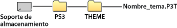

Ajustes > Ajustes de tema
Ajustes de tema
Configure los ajustes para personalizar elementos como el fondo de pantalla de XMB™ o la fuente del texto en pantalla.
Tema
Puede configurar los ajustes para personalizar el diseño de elementos como los iconos o el fondo de la pantalla XMB™. El tema se puede configurar mediante cualquiera de los métodos siguientes:
Selección de un tema preinstalado
Seleccione un tema preinstalado en el sistema PS3™.
Descarga de un tema al sistema PS3™
Cuando descargue un tema de  (PlayStation®Store) o mediante
(PlayStation®Store) o mediante  (Navegador de Internet), este se instalará automáticamente en el sistema PS3™ una vez finalizada la descarga.
(Navegador de Internet), este se instalará automáticamente en el sistema PS3™ una vez finalizada la descarga.
Instalación de un tema mediante un disco de juego o software de vídeo en Blu-ray Disc (BD-ROM) disponible en el mercado
Para instalar y usar un archivo de tema de un disco multimedia, seleccione el icono en  (Juego) y, a continuación, seleccione el archivo de tema que desee instalar. El tema se usará automáticamente como tema del sistema una vez finalizada la instalación.
(Juego) y, a continuación, seleccione el archivo de tema que desee instalar. El tema se usará automáticamente como tema del sistema una vez finalizada la instalación.
Creación o descarga de un tema en un PC
Cuando descargue un tema desde un sitio Web o cree un tema mediante un PC, cree una nueva carpeta con el nombre [PS3] - [THEME] en el soporte de almacenamiento y, a continuación, almacene el tema en dicha carpeta. Los archivos de tema se deben guardar con la extensión [.P3T].

Para instalar el tema en el disco duro del sistema PS3™, conecte el soporte de almacenamiento que contiene el archivo de tema al sistema y, a continuación, seleccione  (Ajustes) >
(Ajustes) >  (Ajustes de tema) > [Tema] > [Instalar].
(Ajustes de tema) > [Tema] > [Instalar].
Notas
- Los iconos que no forman parte del archivo del tema serán sustituidos por otro icono en el archivo de tema o permanecerán como el icono predeterminado de la pantalla XMB™.
- Si el archivo de temas contiene varios fondos de pantalla, el fondo de pantalla del tema cambiará aleatoriamente.
- Está disponible software para ordenador que permite crear sus propios archivos de tema para utilizar en el sistema PS3™. (También se requiere software disponible en el mercado para la creación de elementos gráficos.) Para obtener más información, visite el sitio Web de SCE de su región.
- Para poder utilizar los soportes de almacenamiento con determinados modelos de sistema PS3™, necesitará un adaptador USB apropiado (no incluido).
Eliminar temas
Seleccione el tema que desee eliminar, pulse el botón  y, a continuación, seleccione [Eliminar].
y, a continuación, seleccione [Eliminar].
Color
Ajuste el color de fondo de la pantalla XMB™.
| Original | Establezca el color de fondo original. |
|---|---|
| (muestra de color) | Ajuste el color seleccionado como color de fondo. |
Fondo de pantalla
Ajuste el fondo de pantalla del tema o la imagen seleccionada como imagen de fondo en  (Foto) como fondo de la pantalla XMB™.
(Foto) como fondo de la pantalla XMB™.
| Brillo | Modifique el brillo del fondo de pantalla. |
|---|---|
| Original | Establezca el tema original. |
| Clásico | Ajuste el tema en la opción [Clásico]. |
| (nombre del tema) | Establezca el fondo de pantalla del tema ajustado en [Tema]. |
| Imagen de fondo | Establezca la imagen seleccionada como imagen de fondo en (Foto) para el fondo de pantalla. |
Fuente
Establezca el tipo de fuente que desea utilizar en la pantalla XMB™ o en los mensajes en  (Amigos). Si el idioma del sistema está establecido en Coreano, caracteres de Chino simplificado o de Chino tradicional, no podrá seleccionar está ajuste.
(Amigos). Si el idioma del sistema está establecido en Coreano, caracteres de Chino simplificado o de Chino tradicional, no podrá seleccionar está ajuste.
Nota
Las fuentes que pueden seleccionarse varían en función del idioma del sistema que se esté utilizando.